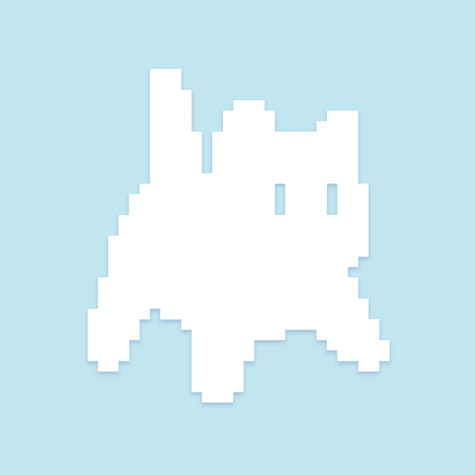

Рычкова Полина
Junior Frontend-разработчик
20 лет Бобруйск, БеларусьКонтакты
О себе
Начинающий Frontend-разработчик
- Цели и приоритеты
Главный приоритет сейчас — качественно освоить стек HTML/CSS/JavaScript и заложить прочный фундамент для перехода к современным фреймворкам. Стремлюсь писать чистый, валидный код и доводить каждую задачу до конца - Сильные стороны
Умею концентрироваться на деталях, не боюсь искать решения сложных задач в документации и быстро разбираюсь в новых инструментах разработки
Навыки
- Frontend-технологии: JavaScript(ES6+), HTML5, CSS3
- Верстка: Адаптивная и кроссбраузерная верстка, Flexbox, Grid, БЭМ
- Инструменты: Git, GitHub, Figma, Insomnia
- Языки:
- Русский - Родной
- Английский - A2 (Pre-Intermediate / Technical Reading)
- Белорусский - B1
Примеры кода
function multiply(a, b) {
return a * b;
}Проектный опыт
To-Do Application | 🔗 Деплой | 💻 GitHub
- Стек: React, JavaScript, HTML, CSS, LocalStorage
- Создала интерактивное приложение для планирования задач с возможностью добавления, редактирования и удаления элементов
- Реализовала хранение данных в LocalStorage, благодаря чему список задач сохраняется при перезагрузке страницы
Адаптивные лендинги и многостраничные сайты
- Стек: HTML, CSS, Flexbox, Grid, Figma
- Реализовала кроссбраузерную и адаптивную верстку по макетам из Figma
Опыт работы
Frontend-разработчик / Верстальщик
Digital-агентство (Разработка веб-сайтов) - Удаленно
Март 2025
Оператор ПК
21vek.by - Минск - Удаленно
Октябрь 2025 - по настоящее время
Образование и курсы
Минский Государственный колледж цифровых технологий (2021 - 2025)
Специальность: Техник-программист
RS School | JS / Front-end, Stage 1 (2023)